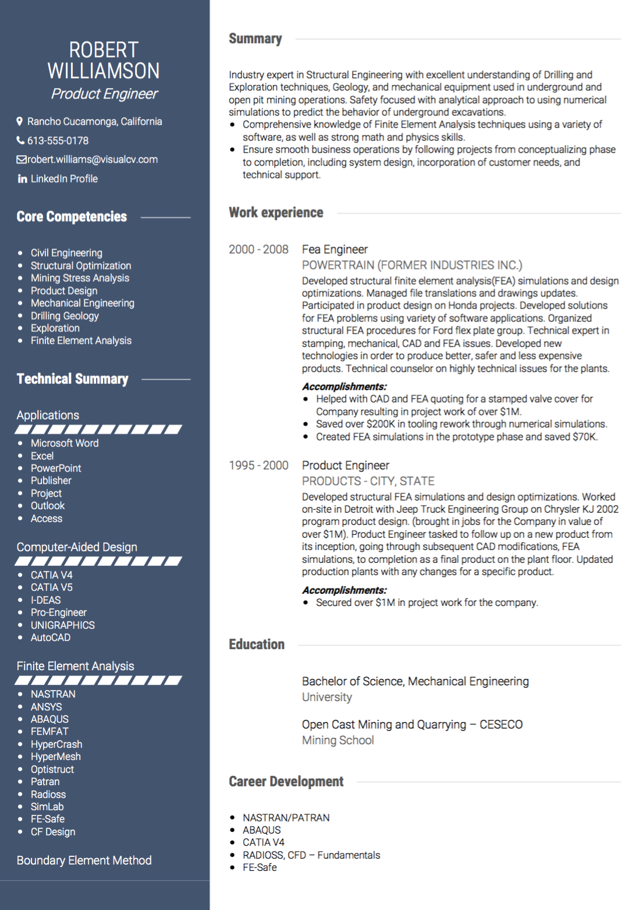

Exigences de curriculum vitae américaines
En Amérique, le terme «CV» est beaucoup plus commun que «CV» - en fait, ces termes se réfèrent à deux choses différentes. Un «CV» se réfère habituellement à un document long et détaillé pour les universitaires et les emplois dans le milieu universitaire. Selon toute vraisemblance, ce n'est pas ce dont vous aurez besoin lors de la demande d'un emploi en Amérique - un résumé de deux pages plus simple fera.

US Resume Conseils et règles:
Durée: Dans la plupart des cas, deux pages suffisent pour votre CV américain. Un curriculum vitae d'une page fera si vous êtes diplômé au cours des dernières années, et un curriculum vitae à trois pages est acceptable pour les demandeurs d'emploi très expérimentés, mais attention: «Plus votre CV est long, moins il est probable qu'un employeur doit voir les pièces que vous Veulent qu'ils le voient “, selon Alison Green chez Ask a Manager . Sauf si vous êtes très certain, conservez-le sur deux pages.
Langue: utilisez un anglais américain standard lors de l'écriture de votre CV américain. Lâchez ces U extra: c'est «couleur» et «travail», pas «couleur» ou «travail».
CV ou curriculum vitae: aux États-Unis, le terme «CV» est plus commun que «CV». Le «CV» se réfère habituellement à un document académique plus long qui contient beaucoup plus d'informations qu'un CV régulier. Format, ordre et mise en page de résumé des États-Unis:
Photo: Dans la plupart des cas, il est recommandé de ne pas inclure une photo de vous-même avec votre CV. Votre apparence n'est pas pertinente pour vos compétences et vos capacités, et y compris une image qui distingue le contenu de votre CV et ouvre la porte à la discrimination - en effet, "Certaines entreprises vont même rejeter résumés avec des photos, juste pour éviter cette accusation potentielle , "Selon Julie O'Malley . Toutefois, cette règle de principe a des exceptions; Assurez-vous de faire vos recherches avant de prendre votre décision. Si vous postulez à un rôle plus créatif - peut-être dans le cinéma, le graphisme ou les arts du spectacle - une image professionnelle peut vous aider à vous démarquer et à créer votre marque personnelle. Utilisez votre discrétion pour décider si une image CV est correcte pour chaque application.
Renseignements personnels: Il est important d'inclure votre nom, votre adresse, votre numéro de téléphone et votre adresse électronique. Vous pouvez également inclure un lien vers votre LinkedIn ou d'autres réseaux sociaux, mais seulement si vous êtes totalement certain que ces profils vous présenteront comme professionnel et en location. Assurez-vous que tous les profils en ligne sont à jour et reflètent vos objectifs et votre professionnalisme.
Résumé personnel : Un résumé de vos qualifications séparées de votre expérience de travail est facultatif, mais pour les demandeurs d'emploi expérimentés, c'est un excellent moyen de fournir un aperçu de votre histoire et de vos compétences. Selon Lily Zhang à The Muse , les énoncés récapitulatifs sont «généralement les meilleurs pour les professionnels plus expérimentés avec des années d'expérience pour s'harmoniser avec un thème commun». Cette section devrait être courte et puissante - se vendre dans le plus petit espace possible.
Expérience de travail: écrivez votre expérience de travail dans un ordre chronologique inversé, avec votre position la plus récente au sommet. Lorsque vous rédigez votre expérience de travail, mettez l' accent sur vos réalisations plutôt que sur vos responsabilités, en mettant en évidence des informations quantifiables chaque fois que cela est possible. Votre historique de travail doit être adapté pour répondre au travail que vous postulez - utilisez les mots clés de l'offre d'emploi, mais seulement si vous pouvez sauvegarder vos réclamations.
Éducation: vos réalisations éducatives devraient également être répertoriées dans un ordre chronologique inverse. Si vous êtes un diplômé récent, vous pouvez inclure votre GPA, mais seulement s'il est élevé et seulement s'il est pertinent pour le poste. Une fois que vous avez plus d'années d'expérience professionnelle, votre GPA devient moins important.
Autres sections:
Compétences : une liste de compétences est un excellent moyen de compléter votre histoire de travail. C'est un moyen simple et lisible de donner une idée de ce que vous excoriez.
Expérience de bénévolat: l' expérience de bénévolat pertinente a l'air géniale d'un CV. Si votre expérience de bénévolat est particulièrement robuste, vous pouvez l'inclure dans votre section d'expérience professionnelle.
Références: Il n'est pas nécessaire d'inclure vos références sur votre CV. Il suffit de les fournir lorsqu'ils sont demandés par un employeur.
Conclusion:
Un résumé simple de deux pages est le chemin à parcourir en Amérique. Une langue forte et active, un historique de travail axé sur la réussite et un ensemble de compétences solides impressionneront les recruteurs et les employeurs partout en Amérique.